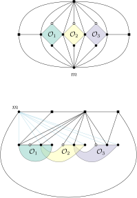

Plane Graphs on a Constant Number of Tracks
Defunct: This page is more or less defunct at this point, because of this theorem, and the fact that track-number is bounded by queue number:
Every graph from an apex-minor-free family has such a layered $H$-partition (where $\ell$ and $q$ depend on the apex-minor) and so do $k$-planar graphs (where $\ell$ and $q$ depend on $k$.) See Dujmović et al. and Dujmović, Morin, and Wood, respectively.
The Original Page
$\newcommand{\Q}{\mathcal{Q}}\newcommand{\X}{\mathcal{X}}\newcommand{\D}{\mathcal{D}}$This is a summary of Jiun-Jie Wang’s new paper: Layouts for Plane Graphs on Constant Number of Tracks. These notes are mainly to help me understand the paper.
The Big Picture
$\DeclareMathOperator{\tn}{tn}$A $t$-track assignment of a graph $G$ is a (not necessarily proper) $t$-colouring $c:V(G)\to\{1,\ldots,t\}$ of $G$’s vertices, along with a total ordering $<_i$ of the vertices in each colour class $i\in\{1,\ldots,t\}$. An X-crossing in a track assignment is a pair of edges $vw$ and $xy$ with $c(v)=c(x)=i$, $c(w)=c(y)=j$, $v<_i x$, and $w<_j y$. The span of a track assignment $(c,<_{1},\ldots,<_t)$ is the maximum value $|c(u)-c(w)|$ where $uw$ is an edge of $G$.
The track number $\tn(G)$ of $G$ is the minimum value of $t$ for which $G$ has a $t$-track assignment $(c,<_{1},\ldots,<_t)$ such that $c$ is a proper colouring and that has no X-crossings.
It follows from gluing together results by Dujmovic and Wood and Dujmovic, Por, and Wood that if $G$ has a track assignment $(c,<_{1},\ldots,<_t)$ for which
- the queue number of the subgraph induced by each colour class of $c$ is at most $\Q$;
- the largest set of pairwise X-crossing edges is at most $\X$; and
- the span of $c$ is at most $\D$,
then $\tn(G) \le f(\Q,\X,\D)$ for some function $f:\N^3\to \N$.
Therefore, it suffices to find a track assignment for which $\Q,\X,\D\in O(1)$. From now on, we’ll call this a $(\Q,\X,\D)$-layout. (Wang calls it a $(\Q,\X,\D)$-well-placed layout in a ladder $\mathcal{H}$.)
- Input: Plane graph $G$
- Let $G^1$ be a 1-subdivision of $G$.
- Get a composite-layerlike embedding, $E$, of $G^1$ (Theorem 4 in Section 4)
- Convert $E$ into a $(\Q,\X,\D)$-layout $c$ of $G^1$ (Theorem 10, last page)
- By the results discussed above, $\tn(G^1) \in O(1)$ and, therefore, by a result of Dujmovic and Wood [1, Lemma 7] $\tn(G)\in O(1)$.
Key Definitions
These are my interpretations of some key definitions:
- A layer is a horizontal line. Layers proceed downward, with higher numbered layers below lower numbered layers.
- A layerlike graph is a plane graph where the vertices are assigned to layers $1,\ldots,k$, and there is an ordering of the vertices on each layer with the restriction that edges always join two vertices on the same layer or on consecutive layers.
A layerlike graph Π is a graph whose vertices are partitioned and placed on contiguous layers such that no edge is placed between any two non-contiguous layers and no edges are crossing.
- A downpointing triangle in a layerlike graph is a cycle with all but one vertex on layer $i$ and the remaining vertex on layer $i+1$.
Given a layerlike graph Π, a down-pointing triangle ▽ is a a cycle (l, · · · , r, m) that vertices on the cycle (l, · · · , r, m) are on the two contiguous layers where the path from l to r are on the upper layer and the vertex m is on the lower layer
- A bowl in a layerlike graph is a cycle with all vertices on the same layer.
A bowl ♥ is a cycle (l, · · · , r) that the cycle are on the same layer where each vertex of the cycle is on the same layer.
- A composite-layerlike graph is a plane graph that has a backbone $K$ that is a layerlike graph. Each bowl $\heartsuit$ of $K$ can contain a composite-layerlike graph whose first layer is $\heartsuit$. Each downpointing triangle $\triangledown$ of $K$ can contain a composite-layerlike graph whose first layer is the top layer of $\triangledown$.
A composite-layerlike graph G can be recursively defined as follows: G consists of a layerlike graph Π such that each bowl ♥ of G has a smaller composite-layerlike graph G1 where G1’s first layer is the bowl ♥, and each down-pointing triangle ▽ has a composite-layerlike graph G2 where the first layer of G2 is the upper layer of ▽.
This object should really be called a composite-layerlike embedding of a plane graph.
Theorem 2
This theorem says that, if $G$ is a $(\Q,\X,\D)$-layout, then $G$ can also be drawn as a $(\Q,\X,O(\D))$-well-placed graph with only $O(\D)$ layers.
The proof of this is to wrap the graph onto $O(\D)$ layers. The fact that the edge span is $\D$ ensures that this wrapping doesn’t increase $\Q$ or $\X$. This is basically the original wrapping argument from [1]. But actually, I don’t think this is needed since it we can use one of the results in one the {Dujmovic, Por, Morin, Wood} papers.
Section 3
This section discusses how to take a composite-layerlike (embedding of a planar) graph $G$ and turn it into a $(\Q,\X,\D)$-layout with $\Q,\X,\D\in O(1)$. Part of this Section includes Conjecture 1, which is later proved in Section 7.
Section 4
This section shows how to find a composite-layerlike embedding of a plane graph. More specificially, it shows (in Theorem 4) that a 1-subdivision of any planar graph $G$ has a composite-layerlike embedding.
I found this proof (which is supposedly the easy part of the paper) almost impossible to follow. In fact, I think there’s a counterexample. Let me quote the paper:$\newcommand{\OO}{\mathcal{O}}\newcommand{\GG}{\mathcal{G}}$
In this section, we show how to reform a plane graph $G$ to a composite-layerlike graph $\GG$. Let $G$ be a plane graph and $\OO(G)$ be its outer boundary. Each layer in a composite-layerlike graph $\GG$ can be recursively defined as follows: the first layer is $\OO(G)$ and $\OO_{G}$ is placed as clockwise order $(m, u_1,u_2, \cdots)$. Then $(\OO_1, \OO_2, \cdots, \OO_p)$ are the sequential maximal inner cycles inside $\OO$ such that for each maximal inner cycle $\OO_i, 1\leq i\leq p$, there are some vertices on $\OO_i$ connecting to the vertex $m$. Now for each maximal inner cycle $\OO_i, 1\leq i\leq p$, we can walk around the cycle $\OO_i$ by clockwise order to get two contiguous vertices $(L^U(\OO_i)=(v^i_1=u^i_y, v^i_2, \cdots, v^i_x=u^i_1), L^B(\OO_i)=(u^i_1=v^i_x, u^i_2, \cdots, u^i_y=v^i_1) )$ where each vertex of $L^U(\OO_i)$ don’t connect to the vertex $m$ except the first and last vertices ${v^i_1, v^i_y}$ of $L^U(\OO_i)$ and each vertex of $L^B(\OO_i)$ connects to the vertex $m$. All maximal inner cycles $(\OO_1, \OO_2, \cdots, \OO_p)$ can be placed on the second layer as the order: $(\OO_1, \OO_2, \cdots, \OO_p)$. Moreover, for each maximal inner cycle $\OO_i$, $\OO_i$ is placed on the second layer from the vertex $u^i_1$ by clockwise order as: $(v^i_1=u^i_y, v^i_2, \cdots, v^i_x=u^i_y, u^i_{y-1}, \cdots, u^i_2)$.
The following picture illustrates the problem:

The second figure represents my understanding of the preceding paragraph, which could be incorrect. However, if the goal is that $\OO_1$, $\OO_2$, and $\OO_3$ should all be bowls on the same layer, then I don’t see any way to resolve the fact that $\OO_2$ shares two non-adjacent vertices with $\OO_1$ and $\OO_3$.
There is another problem still: If the graph $G$ is the stellated triangulation. In this graph, the outer face $\OO(G)$ is a cycle of length three $v_1,v_2,v_3$, which becomes a bowl $\heartsuit$ of length three on layer 0. Now, the three vertices of $\heartsuit$ are each connected to the same vertex $v$. Though the above description doesn’t say what to do in this case, the only reasonable interpretation is to place $v$ onto the layer 1, inside $\heartsuit$. In this case, each of the down-pointing triangles $v_1,v_2,v$, $v_2,v_3,v$ and $v_1,v_3,v$ has something inside of it, The problem is that $v_1,v_3,v_3$ is not really a downpointing triangle, at least not in the way that every other triangle is downpointing.
obtained by starting with a triangle and splitting it into three triangles, and splitting each of these into three triangles.
$K_3$ trianguluation,
Section 5
This is where they prove Theorem 6, which is that every plane graph has $O(1)$ track number. This is where I have a problem.
Section 6
In this section, they prove how to get a $(\Q,\X,\D)$-well-placed layout for something called a raising fan. This is later used in Section 7, I think.
Section 7
In this section, they show how to find a skeleton in a region so that the skeleton has a $(\Q,\X,\D)$-well-placed layout.